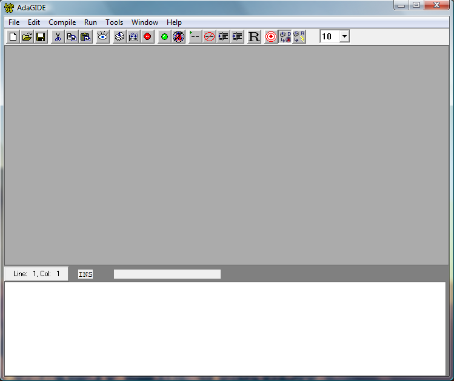
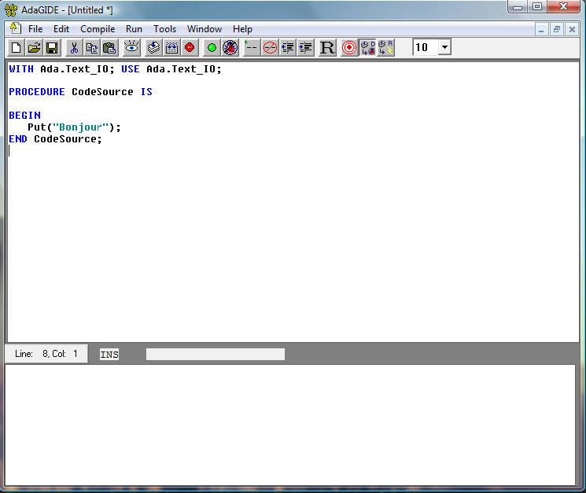
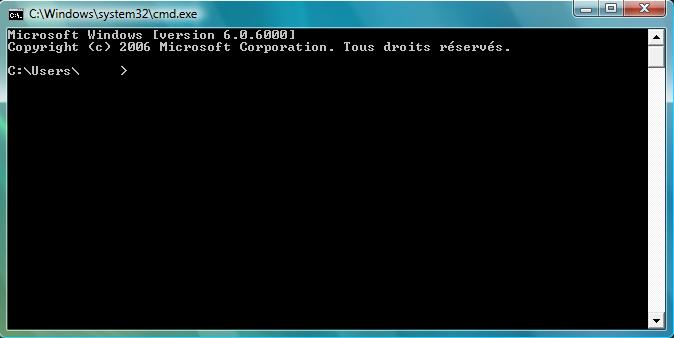
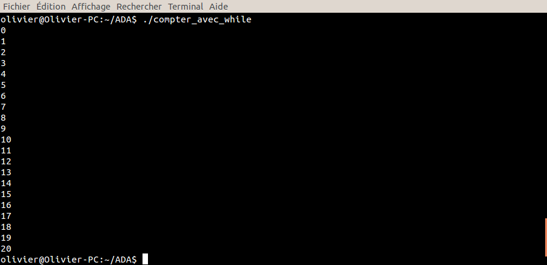

Avez-vous eu subitement l'envie de parcourir ce tutoriel sur la programmation ? Vous êtes-vous dit que c'était le jour ou jamais pour débuter ?
C'est parfait, parce qu'ici, nous sommes tous débutants !
Aucune connaissance n'est nécessaire pour lire ce cours, qui vous est destiné ! Vous qui, faute d'avoir dans votre entourage des personnes capables de vous enseigner la programmation pas à pas, n'avez jamais osé vous lancer. N'ayez plus peur dès à présent, lancez-vous !
Nous espérons que vous en apprendrez un maximum en lisant ce cours. Bonne lecture ;) .
Premièrement, pour être sûrs de nous, nous allons répondre à la question suivante :
que signifie le mot « programmer » ?
Sans rentrer dans les détails, cela signifie "coder une suite d'instructions qu'une machine devra effectuer par la suite". Cette suite d'instructions s'appelle justement un algorithme.
Cela n'en a pas l'air, mais ces algorithmes, on les retrouve partout, et pas forcément sous forme écrite. Imaginez, par exemple, la suite d'instructions que votre cerveau doit effectuer pour mettre en marche votre voiture. Je vais décrire en détail, ci-dessous, toutes les manoeuvres à faire pour mettre en marche une voiture :
mettre la clé dans le démarreur ;
serrer le frein a main ;
mettre le levier de vitesse au point mort ;
répéter les opérations suivantes tant que le moteur ne tourne pas :
mettre le contact ;
tourner la clé dans le sens des aiguilles d'une montre ;
attendre quelques secondes ;
si le moteur ne démarre pas, remettre la clé dans la position initiale ;
enclencher la première vitesse ;
desserrer le frein à main.
C'est ce genre d'expressions que l'on rencontrera dans la programmation.
Maintenant que vous savez ce que veut dire le mot programmer, intéressons-nous aux exigences de l'apprentissage de la programmation.
Autant vous le dire tout de suite, pour programmer, il ne faut pas avoir fait vingt ans d'études, ni être le plus grand savant de la planète :lol: .
Non, on peut apprendre à programmer même si on n'aime pas les maths !
Il faut bien sûr distinguer l'envie de l'obligation de programmer.
Je m'explique. Tout d'abord, il faut être sûr d'avoir la motivation nécessaire pour commencer à écrire votre code. Il est clair que par la suite, il ne faudra absolument pas commencer par vouloir programmer un jeu vidéo ! Je vous le dis tout de suite : ça serait perdu d'avance ;) ! Ensuite, il ne faut pas que vous vous sentiez obligés d'écrire un grand programme, car toutes les personnes qui sont passées par le début (comme vous en ce moment), moi y compris, ont commencé par écrire de petits programmes. Plus vous irez doucement dans votre apprentissage, plus vous serez sûrs d'avoir acquis de bonnes bases pour la suite.
Tout cela pour vous dire qu'il faut bannir de votre vie les gens qui pourraient vous dire : "Non, la programmation ce n'est pas fait pour toi."
Ces gens-là ont tort, et si vous ne me croyez pas, je vous invite à me suivre durant tout ce tutoriel, et on verra bien ensuite qui rira le dernier :D .
Nous voici quasiment arrivés à la fin de ce premier chapitre, qui traite des questions basiques concernant l'informatique. Avant de continuer, nous allons faire la petite histoire du langage en question : Ada 95.
Ada remontent au début des années 1980. Son développement a commencé au début des années 1980 pour donner Ada 83. Ada 83 a été ensuite repris et amélioré au milieu des années 1990 pour donner Ada 95, le premier langage objet normalisé de manière internationale. Une révision a eu lieu après et s'est nommé Ada 2005.
Ada 83, Ada 95 et Ada 2005 ? Je ne vais quand même pas apprendre trois langages Ada !?
Non, je vous rassure ! Vous êtes bien sur le tutoriel pour apprendre Ada 95 mais comme nous faisons sa petite histoire, il est utile de savoir qu'il n'est pas le seul Ada sur le marché. Ainsi alors vous éviterez toutes confusions !!
Ada 95 est souvent utilisé pour l'apprentissage de l'informatique, car il est clair et structuré, et c'est d'ailleurs une des raisons qui m'ont poussées à faire un cours entier sur celui-ci. En outre, je trouve qu'il permet de faire de bien jolies choses, même lorsque nous sommes débutants.
Cependant, Ada 95 connaît quand même quelques détracteurs, car ces derniers sont souvent déçus de la rigueur du compilateur, ce qui justement est une des qualités reines pour un développement fiable. Une autre raison pour adopter Ada 95 est qu'il est de nos jours enfin accessible aux moins fortunés d'entre nous. En effet, un compilateur destiné à Ada 95 (GNAT) est gratuit et permet, entre autres aux étudiants, de s'adonner facilement à la programmation.
On appelle aussi Ada 95 le langage vert.
Le langage vert ? Il est bio ?
Non ! Lors de l’appel d’offre du DoD, les différentes propositions étaient désignées par des couleurs pour éviter tout biais, et l’équipe qui l’a conçu était l’équipe verte. C'est là l'origine du synonyme langage vert. ;)
Notez encore qu'il est largement utilisé en entreprises, à la Nasa, ou encore dans les banques. Vous trouverez ci-après un lien vous montrant les différentes écoles qui enseignent Ada, en france, mais pas seulement ;) : Liste des écoles enseignant Ada.
Il a été créé par l'équipe de Jean Ichbiah et résulte d'un cahier des charges extrêmement précis fourni par le Département de la Défense américaine. Son nom, assez bizarre me direz-vous, a été choisi en l'honneur d'Ada Lovelace, une femme qui est supposée être la première (femmes et hommes confondus) à avoir écrit un programme informatique :p .
Voilà pour la petite histoire.
Je ne sais pas ce que vous en pensez, mais personnellement, je bous d'impatience de vous faire découvrir encore plus Ada 95. Vous aussi ? Parfait, alors suivez-moi :) !
Tout programmeur aura besoin d'un outil afin de taper son code. C'est avec un IDE que nous effectuerons cette tâche.
IDE : Définition
IDE signifie Integrated Development Environment, que l'on peut traduire par environnement de développement intégré. C'est un programme qui contient un éditeur de texte (comme le Bloc-notes sous Windows), un compilateur et parfois un débogueur. Nous utiliserons les logiciels suivants durant notre apprentissage :
comme éditeur de texte, ADAGide ;
comme compilateur, Gnat.
Je vous donne ci-dessous les liens où vous pourrez télécharger ces logiciels (gratuits, faut-il le préciser) :
ADAGide nous servira donc de support afin d'y écrire notre code ADA. Je vous conseille de l'adopter dès le début car c'est avec ce dernier que vous passerez la plupart de votre temps ;) .
Pour l'installation, ne vous prenez pas la tête : faites comme moi, cliquez toujours sur Suivant :p .
Une fois votre programme installé, ouvrez-le en double-cliquant dessus.
Et là, vous êtes stupéfaits de vous voir devant le plus bel éditeur de texte de tous les temps...
Non, il ne faut pas rêver quand même :D . Je vous l'accorde, ADAGide n'est peut-être pas le plus bel éditeur de texte de toute l'histoire de l'Humanité mais il est en tout cas très performant. De nos temps, de la performance, qui plus est gratuite, on en redemande, alors pourquoi ne pas en profiter ?
Voici donc à quoi ressemble ce chef d'oeuvre :

Créer un fichier et l'enregistrer avec ADAGide
Nous allons voir à présent comment créer un nouveau fichier avec ce programme. Il suffit tout simplement d'aller dans le menu File et de cliquer sur New (raccourci : Ctrl + n).
Pour sauvegarder un fichier, allez dans le menu File et cliquez sur Save as.... Là, choisissez le nom de votre fichier et cliquez sur Enregistrer.
C'est simple comme bonjour, n'est-ce pas :p ? En effet, une autre qualité de cet éditeur est d'être simple d'accès ;) .
Après nous être intéressés à la création et à la sauvegarde des fichiers sur ADAGide, nous allons voir à présent la compilation et l'exécution d'un programme avec ce même logiciel.
Concrètement, c'est quoi la compilation o_O ?
Citation : Wikipédia, article Compilation
En informatique, la compilation est le travail réalisé par un compilateur qui consiste à transformer un code source lisible par un humain en un fichier binaire exécutable par une machine.
Quelques définitions afin de mieux comprendre
Le code source
Le code source est le code que vous taperez dans votre éditeur de texte (ADAGide ou autre). Il est donc compréhensible par un humain. Bien entendu, afin d'en faire un exécutable (un fichier de type *.exe), il faudra le compiler.

Un code source écrit en ADA95 à l'aide d'ADAGide.
La base binaire
Un fichier binaire est une suite de 0 et de 1, comme le montre l'exemple ci-dessous :
011001010101
C'est le système de base 2. Les chiffres ne peuvent prendre que deux valeurs : 0 ou 1. Si vous voulez en savoir plus sur la base binaire, rendez-vous sur cet article de Wikipédia : système binaire.
Le compilateur
C'est justement le programme nécessaire afin de compiler le programme. Son travail est de traduire le langage source en un langage machine.
Compilez un programme écrit avec ADAGide !
Imaginez maintenant que vous ayez tapé un programme ADA et qu'il soit entièrement correct (qu'il ne comporte aucun problème). Pour le compiler, rien de plus simple, suivez les instructions ci-dessous :
appuyez sur F2 : ceci compilera le programme ;
appuyez sur F3 : ceci terminera la compilation.
Vous disposez maintenant d'un fichier exécutable, et afin de voir son rendu (c'est-à-dire comment il va apparaître à l'écran), il vous suffit d'effectuer l'opération suivante :
appuyez sur F4 : ceci lancera le programme.
Vous savez maintenant le principe de fonctionnement d'un IDE (Integrated Development Environment).
En Français :euh: ?
En Français : Environnement de développement ^^
Vous avez appris à vous servir d'AdaGide et ainsi à compiler un programme et l'exécuter. Dans le prochain chapitre, nous écrirons notre premier programme en ADA.
Nous sommes enfin arrivés au chapitre où vous taperez votre première ligne de code en ADA :ange: ! Avant toute chose, nous allons voir de quoi est composé un programme en ADA et comment le rendre plus simple à lire et à comprendre.
Ne vous égarez pas en route, je ne viendrais pas vous repêcher ;) .
Tout d'abord, commençons à nous intéresser aux différentes parties d'un programme ADA. Celui-ci se compose de quatre parties principales. Ne vous affolez pas si ces parties possèdent des mots que vous ne comprenez pas, je les définirai un peu plus bas ;) .
La clause de contexte contient tous les outils nécessaires au programmeur. On les appelle communément "paquetages". Voici comment "appeler" un paquetage :
with Ada.Text_IO; use Ada.Text_IO;
L'en-tête du programme, où est spécifié le nom du programme. Voici l'en-tête de notre programme :
procedure Exemple1 is
La partie déclarative, comprise entre l'en-tête et le mot réservé begin. C'est cette partie qui contient les déclarations (constantes, lettres, etc.). La partie déclarative peut encore contenir bien des merveilles, mais nous verrons cela un peu plus tard :) ;
la partie instructions, comprise entre les mots begin et end et qui contient les instructions du programme, c'est-à-dire les actions à entreprendre.
Houla, houla ! C'est du chinois pour moi tous ces mots, je n'y comprends rien.
C'est bien pour cela que j'ai décidé de vous expliquer leur signification ci-dessous :) .
Quelques définitions pour être au clair
Les paquetages (ou packages en anglais)
Comme dans tous les langages, ADA possède des fonctions déjà écrites et présentes directement avec le compilateur. Cependant, ces fonctions ne nous permettent pas de faire beaucoup de choses. C'est pour cela que les programmeurs ont créé des paquetages. Ces derniers possèdent plusieurs fonctions regroupées pour réaliser des actions dans un même domaine.
Par exemple, imaginons un paquetage servant à afficher du texte à l'écran. Ce dernier pourrait posséder plusieurs fonctions parmi lesquelles :
une fonction permettant d'afficher un caractère ;
une fonction permettant d'afficher une chaîne de caractères (comme le mot "Bonjour"), etc.
C'est à cela que servira notre paquetage. Ils nous simplifient grandement la vie, car au lieu de réécrire les fonctions, il suffit d'écrire le nom du paquetage que nous voulons utiliser. Tout au long de ce tutoriel, nous utiliserons deux paquetages principaux : celui permettant d'afficher du texte à l'écran et celui permettant de travailler avec les nombres.
Notez que les paquetages sont les premières choses à écrire dans nos programmes. Cela signifie que la première ligne de votre programme devra contenir l'appel d'un ou de plusieurs paquetage(s) (il se peut très bien que dans vos premiers programmes, vous n'utilisiez qu'un seul paquetage afin d'afficher du texte à l'écran). Le paquetage nécessaire pour afficher des caractères à l'écran ou encore pour récupérer du texte entré par l'utilisateur est le suivant :
with Ada.Text_IO; use Ada.Text_IO;
Pour tous les paquetages, il faudra procéder de cette manière. Remarquons tout de suite comment appeler un paquetage.
Tout d'abord, nous avons le mot réservé with. Ensuite, vient le nom du langage : ADA. Naturellement suit le nom du paquetage (ici Text_IO, qui signifie Text Output Input ou "texte en entrée et sortie"). L'entrée est bien sûr le texte ou le caractère entré par l'utilisateur à partir de son clavier, tandis que la sortie est l'écran. La partie après le ";" et commençant par le mot réservé use signifie que nous allons utiliser ce paquetage. En français, nous pourrions traduire la ligne de commande comme suit : "Avec Text_IO, utiliser Text_IO."
Il nous manque encore un paquetage principal, celui permettant de faire intervenir des nombres entiers relatifs. Le voici :
with Ada.Integer_Text_IO; use Ada.Integer_Text_IO;
Ouiiin ! Moi je veux utiliser des nombres à virgule !
Oui, j'attendais cette remarque :D . Pour la cause, je vous ai fait ci-dessous un tableau résumant les différents types permettant de gérer des nombres en ADA :
Les types faisant intervenir des nombres
Nombres compris entre...
Integer
-2147483648 et 2147483647
Natural
0 et 2147483647
Il reste encore un type différent des deux présentés ci-dessus, nommé Float. Ce type permet de gérer les nombres possédant une partie décimale, comme 4,5.
Les différents types nous donnent trois informations de première importance :
premièrement, la catégorie des valeurs pour ce type ;
deuxièmement, l'intervalle des nombres permis par le type ;
troisièmement, les opérations pouvant être effectuées sur ses valeurs.
Que les plus susceptibles d'entre vous se calment, je ne suis pas en train de vous disputer :p . Le titre résume ce que nous allons voir dans cette partie. Nous allons apprendre à introduire des commentaires dans nos programmes, à leur donner une présentation agréable à lire et à débuter un programme correctement.
Les commentaires
Comme dans tous les langages, il est possible avec ADA d'introduire des commentaires dans nos codes. Ils nous seront utiles en plusieurs points. Ils pourront par exemple nous renseigner sur :
le nom du créateur ou de la créatrice du programme ;
sa date de création ;
le nom du programme ;
son but, etc.
Ils possèdent bien sûr une syntaxe précise qui est la suivante :
--Cette ligne de code est un commentaire
with Ada.Text_IO; use Ada.Text_IO;
--Cette ligne est elle aussi un commentaire, mais pas celle située au-dessus
Bref, vous avez compris comment les intégrer à votre programme :) . Ce sont les deux tirets qui montrent que le texte restant sur la ligne est un commentaire.
Comment puis-je insérer des commentaires sur plusieurs lignes ?
Rien de plus simple, il vous suffit de rajouter à chaque ligne les deux tirets. Par exemple :
--Ligne de commentaire n°1
--Ligne de commentaire n°2
--etc.
Habituez-vous dès le départ à écrire votre nom, la date de création du programme ainsi que tout ce qui vous semble important afin que l'utilisateur qui lira votre programme sache rapidement de quoi il parle.
L'indentation. À quoi sert-elle ?
Là encore, c'est une technique à adopter dès le début de votre apprentissage. L'indentation sert à introduire des caractères de tabulation dans votre code source. Sous Windows par exemple, il vous faudra appuyer sur la touche "Tab" afin d'introduire une tabulation. Ci-dessous, je vais vous montrer deux codes sources ; le premier avec indentation, le second sans :
with Ada.Text_IO; use Ada.Text_IO;
procedure Bonjour is
begin
Put("Bonjour");
end Bonjour;
Code avec indentation
with Ada.Text_IO; use Ada.Text_IO;
procedure Bonjour is
begin
Put("Bonjour");
end Bonjour;
Code sans indentation Cela ne saute peut-être pas aux yeux directement, mais lorsque vous écrirez des programmes très longs, il sera préférable d'indenter votre texte afin de le rendre plus facile et agréable à lire. Notez que la plupart des IDE possèdent une indentation automatique.
Réfléchissez à votre programme avant de vous plonger dedans !
La grande erreur que font beaucoup de débutants est de vouloir directement taper le texte à l'écran, sans même y avoir réfléchi. Ce n'est pas la solution à adopter lorsque l'on est débutant. Apprenez à poser le problème sur une feuille, et à émettre des hypothèses. Réalisez des croquis, cela peut être utile ! Ce n'est qu'après ces étapes que vous commencerez à écrire dans votre IDE ;) .
Oui, nous allons bien apprendre à dire "Bonjour", mais différemment :D . Ce sera le but de notre premier programme : afficher le mot bonjour dans la console !
Je vous entends déjà de loin : houla, du calme ! Tu crois que je sais ce qu'est une console ?
Mais j'avais prévu le coup, donc je vais vous expliquer ce que c'est :lol: !
La console
La console que nous allons utiliser sous Windows (je ne parlerai pas de Linux car je n'ai que de faibles connaissances dans ce système) est très proche de la console MS-Dos. Dans une grande partie de ce cours, nous utiliserons la console, alors si vous n'êtes pas habitués à travailler avec, faites un petit effort :D . Voici à quoi ressemble la console MS-Dos sous Windows :

Un aperçu de la console MS-Dos sous Windows.
L'instruction PUT
En premier lieu, veillez à être organisés. Créez par exemple un dossier nommé "ADA 95" et ensuite un autre nommé "Programmes". C'est dans ce dernier que vous mettrez vos programmes. Par la suite, à vous de vous organiser ;) . Je vous demande de créer un programme nommé afficheBonjour et de l'enregistrer dans le sous-dossier "Programmes". À partir de maintenant, nous en sommes tous au même point : nous possédons une fenêtre ADAGide vide, enregistrée sous le nom d'afficheBonjour.
La première chose à faire, comme je vous l'ai appris, est de présenter le programme. Voici un exemple de ce que cela pourrait donner :
--Schwarzy--
--Avril 2007--
--Description : programme affichant le mot "bonjour" dans une console--
Ensuite, il nous faut appeler le paquetage permettant de faire intervenir du texte dans la console. Rappelez-vous, il se nomme Text_IO :
--Schwarzy--
--Avril 2007--
--Description : programme affichant le mot "bonjour" dans une console--
with Ada.Text_IO; use Ada.Text_IO;
Bien entendu, débutons le programme avec le nom de la procédure et le mot réservé begin :
--Schwarzy--
--Avril 2007--
--Description : programme affichant le mot "bonjour" dans une console--
with Ada.Text_IO; use Ada.Text_IO;
procedure afficheBonjour is
begin
On fait intervenir maintenant l'instruction PUT. Voici sa syntaxe :
PUT("Phrase qui va apparaître dans la console");
Comme pour toutes les instructions, nous remarquons le ; à la fin. Vous avez compris que pour afficher du texte dans la console, il faut mettre PUT, ouvrir la parenthèse, ouvrir les guillemets, taper le texte voulu, fermer les guillemets et fermer la parenthèse. Par la suite, nous indiquerons que le programme est terminé, avec le mot réservé end.
Le programme terminé ressemble à cela :
--Schwarzy--
--Avril 2007--
--Description : programme affichant le mot "bonjour" dans une console--
with Ada.Text_IO; use Ada.Text_IO;
procedure afficheBonjour is
begin
Put("Bonjour");
end afficheBonjour;
En console, rien de surprenant. Vous devriez avoir quelque chose du genre :
Bonjour
Il devrait aussi y avoir "Appuyer sur une touche pour continuer", mais cela dépend de votre IDE.
C'est super, je sais afficher le mot bonjour :D !
Mine de rien, il est normal que vous en soyez fier, je l'étais aussi, à l'époque :o . Je vous rassure, au fur et à mesure, nos programmes deviendront de plus en plus intéressants.
Votre première prise en main d'ADA n'a pas dû vous poser de réels problèmes. Si toutefois ce n'était pas le cas, je vous invite à relire les parties qui vous semblent les plus floues.
Qu'est-ce qu'une variable et comment lui donner une valeur ?
En programmation, on dira qu'une variable est un nom associé à un type. Elle peut être affectée à une valeur, qui elle peut changer au cours du temps. Une variable peut contenir un nombre, une lettre, et même une chaîne de caractères. Elle est un outil précieux pour le programmeur.
En ADA, le nom de la variable sera séparé de son type grâce aux ":". Notons que toutes les déclarations de variables devront se situer dans la partie déclarative comme expliqué dans ce chapitre.
Un petit exemple pour éclaircir tout cela ne fera pas de mal. Imaginons une variable nommée "Age". Le type de la variable est Integer (c'est donc un nombre entier). Voici comment la déclarer en ADA :
Age: Integer; --Age est de type Integer
On remarque aisément qu'il y a d'un côté le nom de cette variable, et après les ":" son type. Imaginons maintenant que nous voulions donner une valeur à cette variable, rien de plus simple : il suffit d'ajouter un ":=" après le type, comme ci-dessous :
Age: Integer:=18; --Age, de type Integer, possède la valeur 18
Age est donc déclarée comme étant un Integer, et possède la valeur 18. Si vous vouliez par exemple répéter l'opération, mais cette fois-ci avec une variable Car (qui contiendrait un caractère), rien de plus simple :
Car: Character:= 'e'; --Car est affectée à la lettre e
Notez tout de même qu'un caractère est toujours compris entre deux guillemets ('e').
Quelques types dont nous aurons besoin
Tout au long de ce tutoriel, nous n'utiliserons pas que le type Integer. Je vais vous dresser un petit tableau des types que nous allons souvent utiliser :
Les différents types
Ils font intervenir...
Integer
des nombres
Float
des nombres à virgule
Character
des caractères
String
des chaînes de caractères
Les nombres compris dans ces différents types ne nous intéressent pas pour le moment, car nous n'utiliserons pas de nombres susceptibles de planter lors de la compilation.
Get Après avoir appris à déclarer une variable, et à lui affecter une valeur, nous allons apprendre à récupérer une saisie qu'un utilisateur aura tapée depuis son clavier. Une instruction a été précisément élaborée pour permettre d'enregistrer (dans une variable bien entendu) une saisie à partir du clavier. Cette instruction s'appelle l'instruction Get.
Pour coder notre première instruction Get, nous allons utiliser un programme que sûrement beaucoup d'entre vous ont déjà utilisé ; nous allons demander l'âge de l'utilisateur, et nous allons récupérer sa saisie. Regardez le programme ci-dessous, ce code source coule de source :D !
with Ada.Text_IO; use Ada.Text_IO;
with Ada.Integer_Text_IO; use Ada.Integer_Text_IO;
procedure DemandeAge is
Age:Integer; --Age est donc un nombre
begin
Put("Entrez votre age : "); --On demande l'âge de l'utilisateur
Get(Age); --On récupère ce qu'il a entré à l'aide de son clavier
New_Line;
Put(Age); --On affiche l'âge entré
end DemandeAge;
Examinons à quoi correspondent les différentes instructions de ce programme :
Put("Entrez votre age : "); : cette instruction demande l'âge de l'utilisateur ;
Get(Age); : cette instruction récupère l'âge entré par l'utilisateur ;
New_Line; permet de faire un saut de ligne ;
Put(Age); affiche l'âge.
Je vous laisse regarder le rendu en mode console :
Entrez votre age : 100
100
On me demande d'entrer mon âge, ce que j'ai fait. Le put devrait afficher ce que j'ai entré, et il le fait parfaitement. :)
Après cette approche plus ou moins ludique des variables, nous allons nous intéresser à une instruction intéressante, l'instruction if ^^ .
Nous continuons, par le biais de ce chapitre, à découvrir les principes de base du langage. Les conditions en font partie. Une condition sera du type :
Sicondition, alorssuite des instructions.
Nous découvrirons tout d'abord une nouvelle instruction qu'est if. Elle se déclinera en 2 parties :
Nous savons affecter une valeur à une variable, et l'afficher. Nous allons appliquer ce que nous avons appris pour l'introduire dans une instruction if. Par exemple, nous voulons coder un programme qui demande l'âge de l'utilisateur (eh oui, encore :p ). Ensuite, grâce à une instruction if, si l'âge donné est inférieur à 18 ans, nous afficherons : "Bonjour, vous n'êtes pas majeur." Par la suite, nous compliquerons ce programme un petit peu.
Au préalable, voici un petit tableau qui énumère les opérateurs de comparaison. Ils nous seront nécessaires afin de comparer l'âge donné par l'utilisateur avec 18, dans notre cas.
Les différents opérateurs de comparaison
Les opérateurs
Leur signification
=
est égal à
<
est plus petit que
>
est plus grand que
<=
est inférieur ou égal à
>=
est supérieur ou égal à
Le programme
Intéressons-nous au programme : pour vous aider à comprendre le fonctionnement d'une instruction if, je vais d'abord l'écrire, et vous donner des informations par la suite :
with Ada.Text_IO; use Ada.Text_IO;
with Ada.Integer_Text_IO; use Ada.Integer_Text_IO;
procedure instructionIf1 is
Age: Integer;
begin
Put("Entrez votre age :");
Get(Age);
if Age = 18 then
Put("Vous etes majeur");
end if;
end instructionIf1;
On comprend aisément le fonctionnement d'une instruction if sans alternative :
en premier lieu, le if marque le début de l'instruction if ;
vient ensuite la condition : Age = 18, ce qui signifie "Age est-il égal à 18 ?" ;
troisièmement, le then signifie "alors" ;
par la suite, le Put est la suite des instructions ;
finalement, le end if; marque la fin de l'instruction if.
N'est-ce pas magnifique :) ? Certes, mais il serait préférable d'y ajouter une alternative ! Imaginez que l'utilisateur entre un autre âge, ou tout simplement tape sur une autre touche ! Que se passera-t-il ? Pour remédier à cela, nous allons rajouter une (voire plusieurs) alternative(s) :D .
with Ada.Text_IO; use Ada.Text_IO;
with Ada.Integer_Text_IO; use Ada.Integer_Text_IO;
procedure instructionIf1 is
Age: Integer;
begin
Put("Entrez votre age :");
Get(Age);
if Age = 18 then
Put("Vous etes majeur");
end if;
end instructionIf1;
Maintenant, rajoutons une alternative
with Ada.Text_IO; use Ada.Text_IO;
with Ada.Integer_Text_IO; use Ada.Integer_Text_IO;
procedure instructionIf1 is
Age: Integer;
begin
Put("Entrez votre age :");
Get(Age);
if Age = 18 then
Put("Vous etes majeur");
elsif Age > 18 then
Put("Vous etes un vrai homme");
else
Put("Tu es encore petit ou tu as tape un mauvais chiffre");
end if;
end instructionIf1;
Si l'on entre un âge inférieur à 18, la suite des instructions exécutées sera située après le else, car la condition Age > 18 n'est pas remplie.
D'accord, aucun problème ^^ . Au lieu de mettre directement un <police="courrier">else</police>, nous mettrons un elsif, traduisez cela par "sinon si".
Le programme sera donc traduit comme suit :
siAge est égal à 18, afficher vous etes majeur ; sinon, siAge est supérieur à 18, afficher vous etes un vrai homme ; sinon, siAge est inférieur à 18, afficher tu es encore petit ; sinon, afficher vous n'avez pas tape un age correct.
Je vous laisse le coder par vous-mêmes, et observer le résultat.
Le programme avec plusieurs alternatives
with Ada.Text_IO; use Ada.Text_IO;
with Ada.Integer_Text_IO; use Ada.Integer_Text_IO;
procedure instructionIf1 is
Age: Integer;
begin
Put("Entrez votre age :");
Get(Age);
if Age = 18 then
Put("Vous etes majeur");
elsif Age > 18 then
Put("Vous etes en vrai homme");
elsif Age < 18 then
Put("Tu es encore petit");
else
Put("Vous n'avez pas tape un age correct");
end if;
end instructionIf1;
Il est important de ne pas oublier le dernier else, car il faut imaginer tous les cas de figure. Un utilisateur pourra tout à fait se tromper sans en être conscient, et le message d'erreur qui va s'afficher va lui permettre de refaire sa saisie, en exécutant une nouvelle fois le programme :) .
Modifions notre programme grâce aux intervalles !
Notre programme fonctionne, mais nous n'avons pas appliqué la notion, assez importante pour la suite (pour les boucles notamment) : les intervalles !
Qu'est-ce qu'un intervalle ?
Un intervalle est un "espace" compris entre deux choses : deux chiffres, deux caractères, etc. Pour bien comprendre, regardons l'intervalle compris entre les lettres 'a' et 'd' :
'a', 'b', 'c', 'd'.
L'intervalle entre 'a' et 'd' comprend donc 4 caractères. Dans notre programme, ils nous seront utiles pour remplacer nos opérateurs de comparaison. Notez que ce n'est pas forcément mieux d'utiliser les intervalles, c'est simplement une autre façon de procéder. Reprenons notre premier exemple :
with Ada.Text_IO; use Ada.Text_IO;
with Ada.Integer_Text_IO; use Ada.Integer_Text_IO;
procedure instructionIf1 is
Age: Integer;
begin
Put("Entrez votre age :");
Get(Age);
if Age in 1..17 then
Put("Vous n'etes pas encore majeur");
end if;
end instructionIf1;
Alors, qui a dit que les intervalles étaient durs :p ? L'intervalle est défini comme suit :
in "Début intervalle".."Fin intervalle"
Par exemple, pour obtenir l'intervalle de toute les lettres de l'alphabet, nous écrirons :
--...
Car:Character;
begin
if Car in 'a'..'z' then
--suite du programme...
Dans notre programme, l'âge doit être compris entre 1 et 17 (in 1..17), ce qui revient presque au même que de dire "inférieur à 18", vous en conviendrez ;) (je dis presque, car vous aurez toujours des personnes dérangées qui essayeront de rajouter un moins devant le nombre :-° ).
Modifiez maintenant le dernier programme que nous avons étudié : rien de bien compliqué à l'horizon. Si vous n'êtes pas convaincus, regardez la correction :
with Ada.Text_IO; use Ada.Text_IO;
with Ada.Integer_Text_IO; use Ada.Integer_Text_IO;
procedure instructionIf1 is
Age: Integer;
begin
Put("Entrez votre age :");
Get(Age);
if Age = 18 then
Put("Vous etes majeur");
elsif Age in 19..100 then
Put("Vous etes en vrai homme");
elsif Age in 1..17 then
Put("Tu es encore petit");
else
Put("Vous n'avez pas tape un age correct");
end if;
end instructionIf1;
Notez tout de même que pour un programme de ce genre, les opérateurs seraient peut-être plus judicieux, car ici on fixe une limite d'âge. Je l'ai fixée à 100, mais qui nous dit qu'un homme de 101 ans n'est pas en train d'utiliser notre programme :D ? C'est peut-être un cas extrême, mais il faut le souligner. N'oubliez pas qu'un programmeur de qualité aura pensé à tous les cas de figure !
Alors, comment s'est passé ce chapitre ? Il n'a pas été trop dur ?
Rassurez-vous, le prochain ne le sera pas non plus :D . En effet, nous apprendrons à créer des boucles, et ainsi à rendre nos programmes encore plus attrayants !
Je suis sûr que vous avez déjà des tonnes d'idées de programmes qui fusent dans votre esprit ! Et vous n'avez vu qu'une petite partie du langage. Les plus téméraires d'entre vous vont, cependant, se heurter très rapidement à un problème : si je veux effectuer des opérations similaires plusieurs fois, suis-je obligé de tout écrire et réécrire encore et encore ? Ohhhh, la flemme s'abat sur moi...
Une boucle permet de répéter une suite d'instructions plusieurs fois. Nous pourrons répéter ces instructions:
tant qu'une condition n'est pas remplie;
pour X dans un intervalle donné;
tant que l'on ne sort pas de la boucle.
Nous allons nous intéresser à divers "types" de boucles. En effet, utiliser toujours les mêmes boucles dans des applications variées ne serait pas un choix judicieux. Il faut l'adapter au programme que nous désirons créer.
La boucle while (traduisez par tant que, si vous préférez ;) ) ouvre le bal. Le principe est simple et compréhensible en langage naturel : tant qu'une certaine condition est vérifiée, on répète la séquence d'instructions contenue dans la structure de contrôle while.
La syntaxe ADA est, comme à l'habitude, très naturelle.
WHILE condition_a_verifier LOOP
-- Instructions a repeter
END LOOP;
Le début de la structure est naturellement introduite par le mot WHILE, suivie un peu plus loin du mot LOOP (boucler, évident non ?). Pour délimiter la fin de la boucle, il faut écrire les mots END LOOP;. Ainsi, la structure est parfaitement délimitée.
La condition_a_realiser est une expression booléenne. Autrement dit, sa valeur ne peut être que VRAI ou FAUX. L'expression est alors nécessairement une condition (bien utile la partie sur les conditions ^^ ). Par exemple, on va dire que tant la valeur de la variable x est inférieure à 42, on va entrer dans la boucle (vous êtes d'accord : soit la valeur est effectivement strictement inférieure à 42 (VRAI), soit elle ne l'est pas (FAUX)).
Ca m'a l'air fort intéressant tout ça ! Mais comment fait-on pour atteindre une condition de manière à sortir de la boucle ?
Excellente question ! Nous allons évoquer le problème de la condition d'arrêt. Evidemment, il va falloir sortir un jour ou l'autre de la boucle, faute de quoi vous allez créer une boucle infinie : vous n'allez faire qu'entrer dans la boucle, exécuter ces instructions, rentrer dans la boucle, re-exécuter les instructions.. indéfiniment ! Comment faire pour éviter cela ? Eh bien, il va falloir penser à modifier au moins une des opérandes intervenant dans la condition ! Bon allez, un petit exemple pour visualiser tout ça (ne vous inquiétez pas, un exemple général de la boucle arrive très bientôt :D ).
x := 1; -- x a ete declare comme Integer
WHILE (x < 2) LOOP
-- diverses instructions
x := x + 1;
END LOOP;
Ici, x est une opérande de la condition. Il faut donc la faire varier, à un moment ou à un autre, pour espérer une modification du résultat du test. Fabuleux : dans la boucle, on incrémente la valeur de x de 1 ! Cela implique donc que le résultat du test ne sera peut-être plus le même que précédemment (je vous laisse deviner... Y'a pas de pièges :lol: ).
Exemple concret : apprendre à compter
Ici, je vais vous montrer comment afficher les nombres de 0 à 20 dans un while contenant... 2 lignes ! Non, la magie n'existe pas, mais vous pouvez toujours faire croire que c'en est ;) . Idée : On peut créer un entier et tant que sa valeur est inférieure à 21, on va l'afficher et l'incrémenter (tiens, on retrouve un tant que !).
WITH Gnat.IO; USE Gnat.IO;
PROCEDURE compter_avec_while IS
compteur : Integer := 0; -- compteur est un entier initialise a 0
BEGIN
WHILE (compteur < 21) LOOP
Put(compteur); -- Affichage de la valeur
New_Line; -- On revient la ligne pour plus de clarte
compteur := compteur + 1; -- Et on incremente compteur de 1
END LOOP;
END compter_avec_while;
Et voilà ce que cela donne, après exécution :

C'est encore un peu flou dans ma tête, on peut voir ça de plus près ?
Aucun soucis, c'est la prochaine étape :) .
Allons dans le détail
Nous allons faire un tableau qui représente l'évolution de l'exécution du programme.
Tour(s) effectué(s)
Valeur de compteur
Test réalisé
Entrée dans la boucle ?
0
0
0 < 21
VRAI
1
1
1 < 21
VRAI
2
2
2 < 21
VRAI
...
...
...
...
20
20
20 < 21
VRAI
21
21
21 < 21
FAUX
On voit clairement, ici, que le test est différent à chaque fois : la condition d'arrêt est potentiellement atteignable. Elle est atteint après le 21è tour de boucle.
Dans quels cas utiliser cette structure de contrôle ?
La boucle WHILE est très utile dès lors que l'on souhaite répéter une séquences d'instructions sans savoir le nombre de tours de boucle que nous allons effectuer. Dans l'exemple précédent, nous savions que nous allions effectuer 21 itérations (de 0 à 20). Cependant, si nous modifions notre programme et que nous demandons à l'utilisateur jusqu'à quel nombre il veut compter, vous ne pouvez pas connaître sa proposition (sauf si vous êtes médium... :euh: ). Ainsi, on peut très bien avec faire 152 itérations comme aucune (si l'utilisateur décide de compter jusqu'à 0, la condition qui permet l'entrée dans la boucle sera d'ores et déjà fausse !).
Petit exercice
Allez, pour terminer cette partie, voilà un petit exercice : Un programme demande à l'utilisateur jusqu'à combien il souhaite compter. On affichera alors le comptage qui se fera 2 par 2 en partant de 0 (donc 0, 2, 4 ...) jusqu'à atteindre le nombre entré par l'utilisateur. Il faudra aussi afficher le nombre de tours de boucle effectués. Bonne chance !
WITH Gnat.IO; USE Gnat.IO;
PROCEDURE compter_deux_par_deux IS
nombreAffiche : Integer := 0; -- nombre qui va etre affiche et modifie, initialise a 0
nombreLimite : Integer := 0; -- nombre fixe par l utilisateur, intiialise a 0
compteur : Integer := 0; -- compteur de tours de boucle
BEGIN
Put("Cher utilisateur, veuillez entrer la limite de comptage : ");
Get(nombreLimite); -- On recupere le nombre fixe par l utilisateur
WHILE (nombreAffiche <= nombreLimite) LOOP
Put(nombreAffiche);
New_Line;
nombreAffiche := NombreAffiche + 2; -- On modifie le nombre affiche en lui ajoutant 2 a chaque passage dans la boucle
compteur := compteur + 1; -- Et on n oublie pas d incrementer le compteur de tours
END LOOP;
Put("Vous avez effectue ");
Put(compteur); -- Hors de la boucle (pour un seul affichage), on affiche le compteur
Put(" tours de boucles");
END compter_deux_par_deux;
Intéressons-nous à présent à la boucle for: elle nous permettra, pour un intervalle donné (par exemple de 1 à 100), de répéter une ou plusieurs instructions.
Voici sa syntaxe:
for I in Intervalle loop
--suite des instructions
end loop;
L'intervalle pourra être exprimé par exemple comme " 1..100 ". Pour rappel, nous avions évoqué les intervalles dans ce chapitre.
Sans plus attendre, voici un exemple:
Citation : Exemple
Réalisons un programme capable d'afficher 10 fois en console: "Bonjour j'ai X euros". Nous incrémenterons à chaque affichage le X
Les boucles ? C'est de la tarte comparé à ce qu'on va voir dans la partie II. :D
Concrètement, vous êtes maintenant prêts pour découvrir encore plein de choses merveilleuses, et même à découvrir des choses difficiles.
Si vous êtes arrivés jusque-là sans difficultés, soyez-en fiers.
Nous voici donc à la fin de notre premier tutoriel. Nous espérons vous avoir appris quelque chose. Nous continuerons, bien sûr, à le mettre à jour au fur et à mesure de notre temps libre... ^^
Nous vous remercions encore pour votre lecture attentive et pour votre confiance.